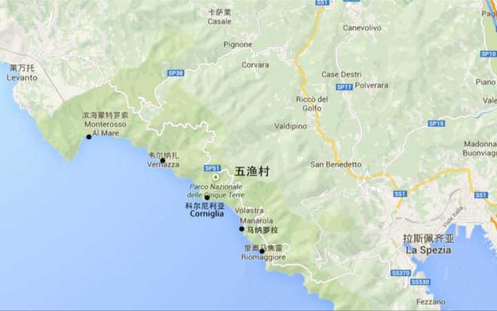
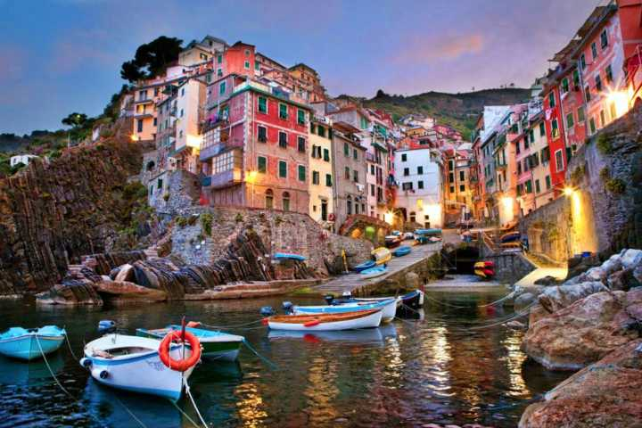
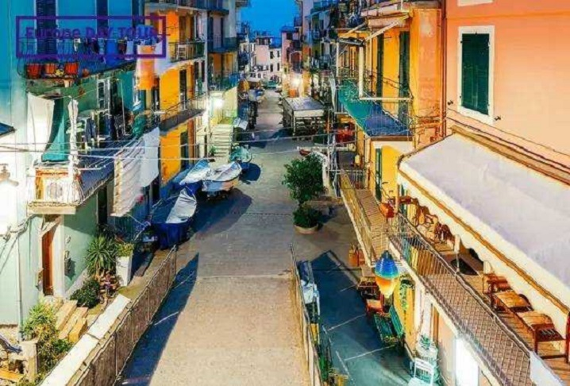
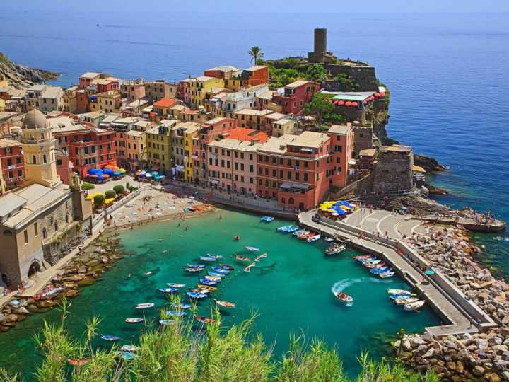

Cinque terre
Cinque terre,中文名为五渔村
坐落于意大利利古里亚大区(Liguria)拉斯佩齐亚省海沿岸地区
是蒙特罗索（Monterosso al Mare）、韦尔纳扎（Vernazza）、科尔尼利亚（Corniglia）、马纳罗拉（Manarola）及里奥马焦雷（Riomaggiore）这五个悬崖边上的村镇的统称。
这个摄人心魄的小镇
在地中海阳光下
散发着无与伦比的缤纷色彩
  若你要去,火车至今仍是村庄之间交通的最佳方式。因为两个站之间只有几分钟的路程，因此很容易打瞌睡或走神忘记下车，这时，错过站的人们只好在下一站下车，一路大笑着跑回家。 从米兰有火车到五渔村的蒙特罗索村，大约3-4小时。